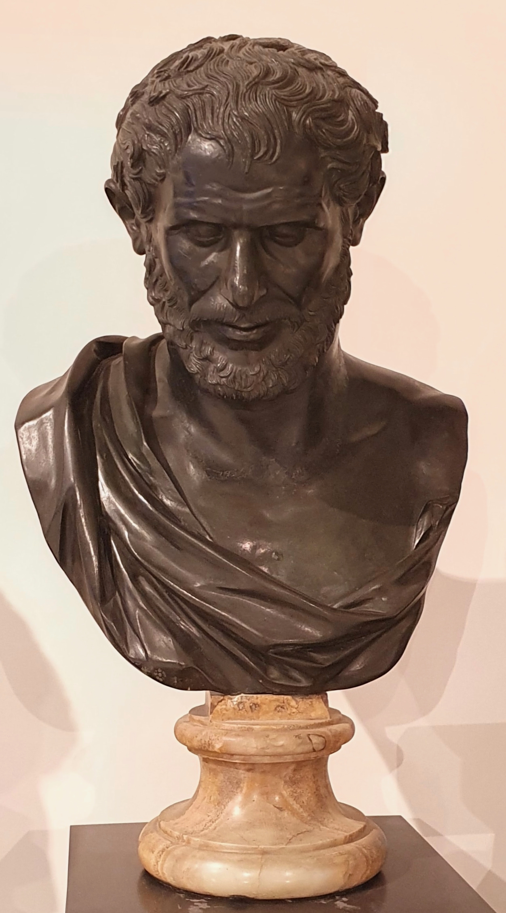

האטום – רעיון ששינה את העולם
המילה היוונית ἄτομος פירושה “שאינו ניתן לחלוקה”: a- = לא, ו־tomos = ניתן לחיתוך או לחלוקה. דמוקריטוס, וככל הנראה גם מורו לאוקיפוס, הציעו שכל החומר מורכב מחלקיקים זעירים כאלה.
פילוסופיה · אטומיזם · קדם־סוקרטים
דמוקריטוס היה פילוסוף יווני שנודע כאחד ממפתחי תורת האטומים: הרעיון שכל החומר מורכב מחלקיקים זעירים הנעים בתוך ריק.

1 · תעודת זהות
2 · ביוגרפיה
דמוקריטוס נולד באבדרה שבצפון יוון ונחשב לאחד ההוגים החשובים של הפילוסופיה הקדם־סוקרטית. המסורת קושרת אותו למסעות לימוד רחבים ולסקרנות יוצאת דופן כלפי טבע העולם.
הוא המשיך ופיתח את רעיונותיו של לאוקיפוס, ובמרכז מחשבתו עמדה השאלה ממה עשוי העולם. תשובתו הייתה נועזת במיוחד: המציאות מורכבת מאטומים ומריק.
3 · רעיונות מרכזיים
המילה היוונית ἄτομος פירושה “שאינו ניתן לחלוקה”: a- = לא, ו־tomos = ניתן לחיתוך או לחלוקה. דמוקריטוס, וככל הנראה גם מורו לאוקיפוס, הציעו שכל החומר מורכב מחלקיקים זעירים כאלה.
לפי דמוקריטוס, האטומים נעים בתוך ריק, ושוני בצורה, בגודל ובסידור שלהם יוצר את כל הדברים בעולם. כיום ידוע שהאטום ניתן לחלוקה, אך השם העתיק נשאר בשימוש במדע.
4 · רקע היסטורי
5 · מורשת והשפעה
6 · הידעת?
7 · מקורות